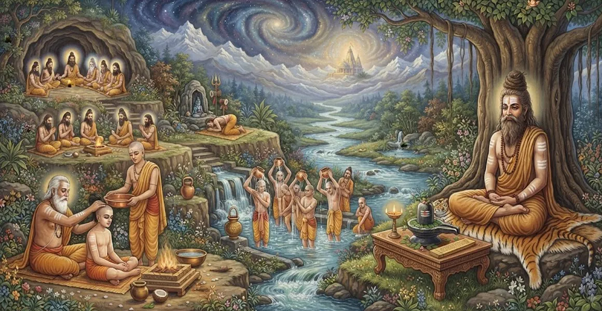

Hair-Cutting and Ablution
The twentieth chapter of the Kailasa Samhita outlines the sacred rules and hygienic protocols for hair-cutting, nail-trimming, and ritual ablution (Snana) for ascetics.
Sage Suta details the precise purification rites required to maintain physical cleanliness and inner spiritual clarity.
This chapter underscores the integral connection between bodily hygiene and divine devotion in spiritual life.
Chapter 20 Highlights
Hair-Cutting Rules
Explores the prescribed protocols for trimming hair and nails among ascetics.
Sacred Ablution
Outlines the methods and spiritual significance of ceremonial ritual bathing.
Bodily Purification
Details the removal of physical impurities to maintain inner purity.
Mantra Chanting
Connects cleaning and bathing acts with sacred invocations to Lord Shiva.
Meditative Readiness
Shows how physical cleanliness directly supports mental concentration.
Transition to Rites
Prepares the seeker for advanced transition duties explored in Chapter 21.
Core Topics in This Chapter
The Spiritual Value of Cleanliness
Sage Suta explains that external purity is a direct reflection of inner spiritual discipline and devotion to Lord Shiva.
A clean body and environment create a harmonious vessel for the retention of vital energy and higher meditation.
Protocols for Hair and Nail Trimming
The chapter sets forth specific days, times, and methods for cutting hair, beard, and nails for ascetics and householders alike.
Observing these timing rules prevents inauspiciousness and maintains physical harmony.
Rules of Ritual Ablution (Snana)
Ritual bathing must be performed with consecrated water, utilizing sacred muds or earths when appropriate, while focusing the mind on divine grace.
Ablution washes away both physical grime and subtle mental sluggishness.
Mantras Associated with Cleansing
During bathing and trimming, specific Shiva mantras are chanted to sanctify the water and transform a mundane act into a sacred rite.
These sacred syllables infuse the body with divine protection and vitality.
Proper Disposal and Environmental Purity
Cut hair and nails must be disposed of respectfully in designated clean spots or buried, maintaining ecological and ritual decorum.
Respecting physical waste is part of the broader ascetic ethic of non-harm and cleanliness.
Daily Hygiene Discipline for Ascetics
Ascetics must adhere to rigorous daily hygiene routines to ensure that bodily upkeep never becomes a source of distraction or attachment.
Cleanliness supports a calm, focused, and steady mind.
Transition to Chapter 21
Having established the rules of hair-cutting and ablution in Chapter 20, Sage Suta introduces Chapter 21, 'Rules for Duties and Rites After an Ascetic's Passing'.
Chapter 21 details the sacred funeral and memorial rites performed upon the departure of an advanced renunciate.
Key Teachings of Chapter 20
External Purity
Cleanliness mirrors spiritual clarity and devotion to Lord Shiva.
Timely Grooming
Hair and nail trimming must follow auspicious timing and sacred rules.
Sacred Bathing
Ablution washes away physical grime and mental sluggishness alike.
Mantra Sanctification
Cleansing acts are elevated through sacred Shiva mantra recitation.
Ecological Care
Disposal of bodily waste must respect ritual and environmental purity.
Passing Transition
Prepares the seeker for the ultimate rites of ascetic departure in Chapter 21.
Spiritual Reflection
In the path of Shiva, even the most mundane acts of daily hygiene are transformed into sacred offerings. When we cleanse the physical body with mindfulness and mantra, we honor the temple of the soul and invite divine light to shine unobstructed.
Living the Message of Chapter 20
Maintain physical cleanliness and personal hygiene with reverence, viewing every bath and grooming act as part of your spiritual discipline.
Approach your daily routines with mindful awareness of your connection to Lord Shiva.
Let purity of body and mind pave the way for deep and undisturbed meditation.
Key Spiritual Concepts
The sacred rules of bodily cleanliness and hygiene prescribed for ascetics.
The traditional protocols for hair-cutting, beard shaving, and nail trimming.
Ritual ablution sanctified by the recitation of powerful Shiva mantras.
The purification of the body using sacred earths or muds during bathing.
The harmonious integration of external physical purity and internal mental clarity.
The subsequent transition toward ascetic funeral and memorial rites in Chapter 21.
Chapter Summary
Kailasa Samhita Chapter 20 presents Hair-Cutting and Ablution. Detailing the spiritual value of cleanliness, rules for hair and nail trimming, sacred bathing protocols, cleansing mantras, and environmental decorum, this chapter provides essential hygiene discipline for ascetics. It sets the stage for Chapter 21, 'Rules for Duties and Rites After an Ascetic's Passing', exploring advanced transitional rites.
Frequently Asked Questions
1. What is the primary subject of Kailasa Samhita Chapter 20?
Chapter 20 outlines the sacred rules and hygienic protocols for hair-cutting, nail-trimming, and ritual ablution (Snana) for ascetics and spiritual seekers.
2. Why are physical purification rites important in spiritual life?
Physical purification cleanses the outer sheath of the body, supports subtle vital energy, and prepares the mind for deep meditative absorption.
3. What does ritual ablution (Snana) entail for an ascetic?
It involves ceremonial bathing with sacred mantras, using purifying substances like earth and water, and washing away internal and external impurities.
4. How does Chapter 20 connect with the preceding chapter?
While Chapter 19 details the ascetic use of the Yogapatta, Chapter 20 builds upon ascetic discipline by prescribing daily and periodic bodily purification rules.
5. What spiritual attitude should accompany these hygiene practices?
Every cleansing act should be performed with mindfulness and viewed as an offering of purity to Lord Shiva.
6. What is the next chapter for navigation after Chapter 20?
The next chapter for navigation is Chapter 21, titled 'Rules for Duties and Rites After an Ascetic's Passing'.
“Through mindful cleansing and sacred ablution, the ascetic purifies both body and mind, reflecting the pristine splendor of Lord Shiva.”
Continue Through Kailasa Samhita
Chapter 20 details Hair-Cutting and Ablution. Continue to Chapter 21, Rules for Duties and Rites After an Ascetic's Passing.